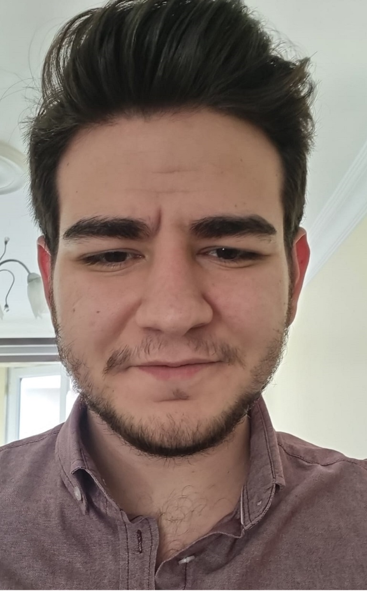
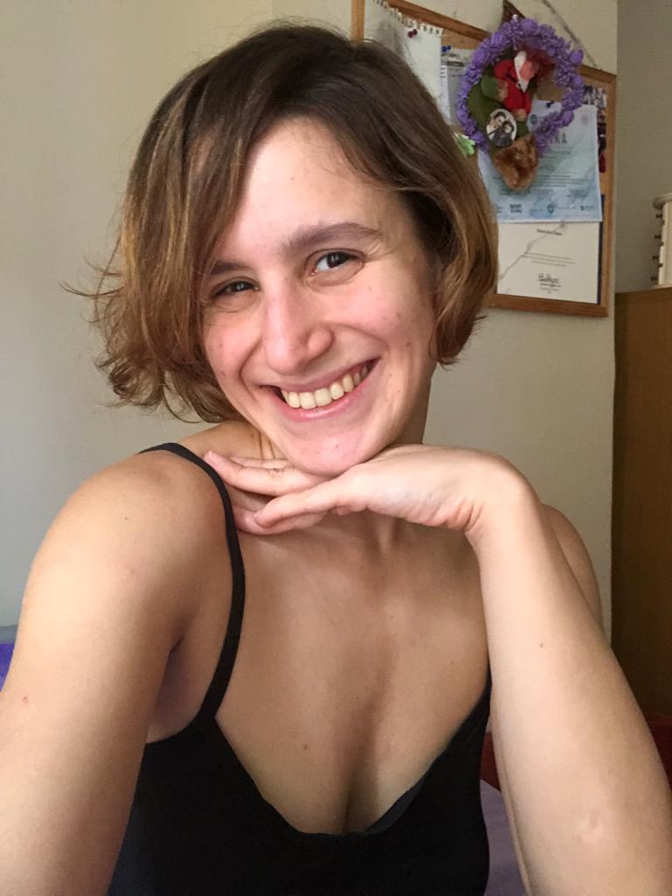

Merhaba, ben Yunus Emre ÇAKAL.
02.07.1998 tarihinde İstanbul'da dünyaya geldim. Sinemaya gitmekten, müzik dinlemekten ve yemek yapmaktan hoşlanıyorum.
Sıkı bir oyuncu olarak oyun oynamayı ve oyun geliştirmeyi çok seviyorum. Ayrıca veritabanı alanında çok iyi olduğum bilinmektedir.
Şu an halihazırda çok sevdiğim ekip arkadaşlarımla birlikte bir proje yapmaktayız. 2022 sonlarında piyasaya sürmeyi
planlıyoruz. Ayrıca sıkı bir backend developer olmak istiyorum ve bunun için çalışmalarım devam etmektedir.
❤ Esra Yazıcı ❤


❤ İlham Perim ❤